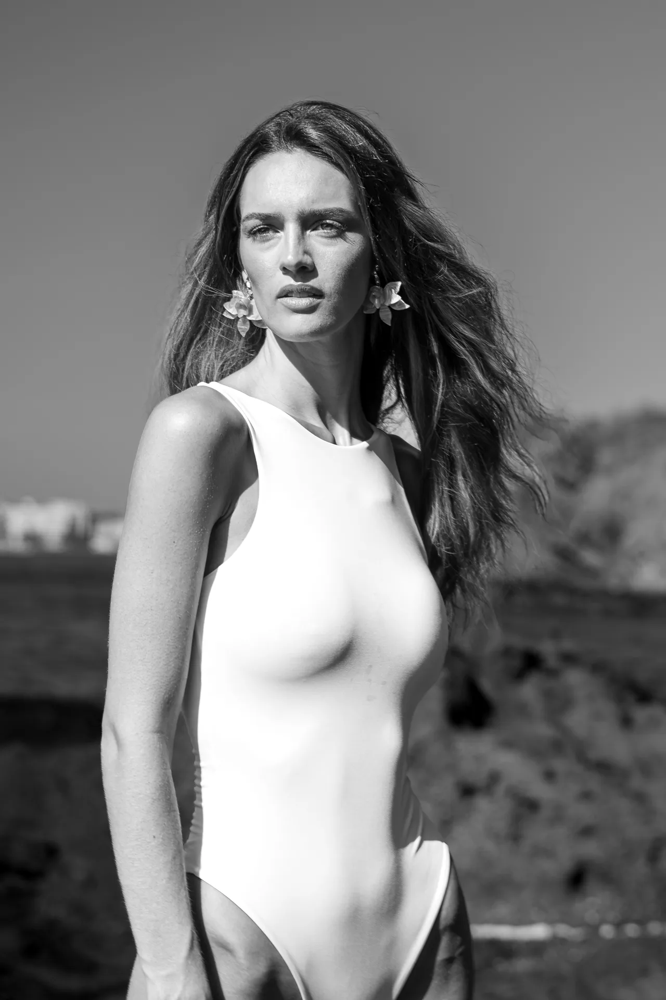

CREAMOS —

RECUERDOS
QUE PERDURAN TODA LA VIDA
DECLARACIÓN ARTÍSTICA
"No capturamos poses forzadas; inmortalizamos la atmósfera, la complicidad y la verdad irrepetible de cada persona. Cada disparo es concebido como una obra de autor para trascender generaciones."
+58 414 6860112
WhatsApp Directo
@gabrielemphoto
Instagram Oficial
Margarita
& Coberturas Globales

SERIE EDITORIAL // FOTOGRAMA 01
GABRIEL EM • 35MM MONOCHROME
ISO 400